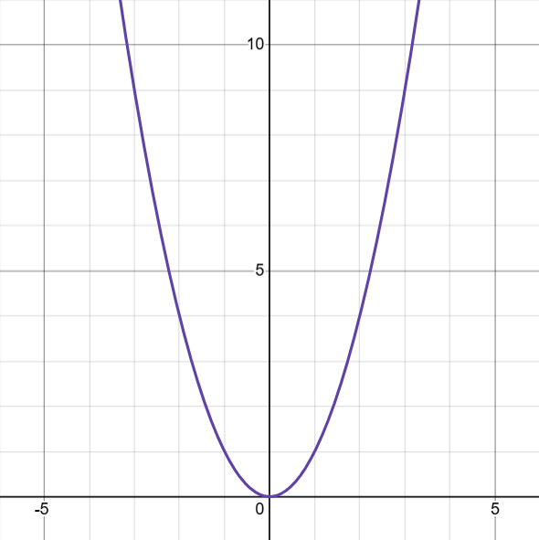
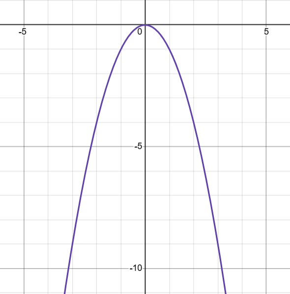

Conceitualização
Uma função qudrática é aquela que tem uma única variável com a forma:
f(x)=ax2+bx+c, a ≠ 0;
Onde x é sua variável e a, b e c são seus coeficientes.
O gráfico dessa função é uma parábola.
Se a função for igualada a 0, então obtemos uma equação quadrática.
Suas soluções são as raízes (ou zeros).
Uma equação quadrática pode ter duas, uma ou nenhuma solução.
Obs: Se a > 0, a parábola abre para cima
Obs2: Se a < 0, a parábola abre para baixo
